| Variables | |
|---|---|
| 0 | sepal_length |
| 1 | sepal_width |
| 2 | petal_length |
| 3 | petal_width |
| 4 | species |
| 5 | # Observations: 150 |
A Beginner’s Guide to Machine Learning Concepts and Applications
Abstract
This tutorial introduces the fundamentals of machine learning, covering key concepts such as supervised and unsupervised learning, data labeling, and model evaluation.
What is Machine Learning?
Machine learning is a subset of artificial intelligence where computers use data to identify patterns and make predictions. These models improve over time by learning from new data and experiences.
Machine learning algorithms work by identifying patterns in the data, specifically between the independent variables (features, often represented as X) and the dependent variables (targets, often represented as Y). These patterns enable the model to make predictions or classifications based on new, unseen data.
Labeled & Unlabeled Data
Before we get into machine learning, we need to talk about data. Data is the foundation of all machine learning—without it, we wouldn’t be able to train the models! There are two broad categories of data used in machine learning: labeled and unlabeled data.
Labeled data contains both the input and the corresponding correct output/target or dependent measure. In this example, we can see two types of labeled data—one labeled with “cat/dog” and another labeled with “weight.” In each case, the model would be trained to predict whether the input was a cat or a dog, or to estimate the weight, depending on the label provided. Unlabeled data only contains the input, leaving the model to identify patterns without guidance.
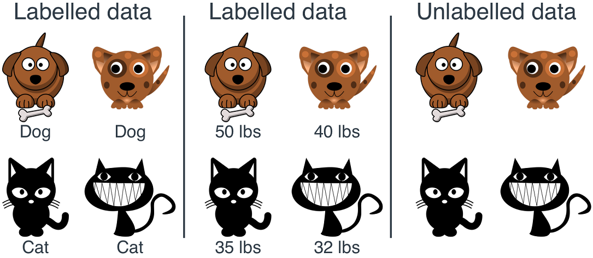
Two Category of Machine Learning
Machine learning can be broadly divided into two primary categories: supervised and unsupervised learning. Each approach has its own strengths and limitations, making them suitable for different types of tasks.
Supervised Learning
- Uses labeled training data
- Majority of machine learning applications
- Commonly used for tasks like classification and regression
Unsupervised Learning
- Uses unlabeled training data
- Less common but powerful for exploratory analysis
- Often used for clustering, content personalization, and dimensionality reduction
Supervised Machine Learning
Supervised machine learning involves training models on labeled data, where the goal is often to make predictions or classifications based on new, unseen data.
Pros
- High accuracy
- Ability to learn from known examples
- Excellent predictive power
- Effective at classifying new data based on historical patterns
Cons
- Requires labeled data
- Time-consuming and expensive to obtain
- Risk of overfitting
- Models may become too tailored to the training data
Unsupervised Machine Learning
Unsupervised learning involves using algorithms to analyze and cluster unlabeled data, discovering hidden patterns without predefined labels.
Pros
- Powerful for data exploration
- Uncovers hidden structures and patterns in data
- Useful for dimensionality reduction
- Simplifies complex datasets, making them easier to visualize and interpret
Cons
- Lower interpretability
- Patterns and structures are harder to understand without labels
- Challenging model evaluation
- Difficult to assess model quality without clear metrics
How Does Machine Learning Work?
The UC Berkeley School of Information has defined 3 components of most supervised machine learning algorithms.
1. A Decision Process:
In general, machine learning algorithms are used to make a prediction or classification. Based on some input data. The algorithm will produce an estimate about a pattern in the data.
2. An Error Function:
An error function evaluates the prediction of the model. If there are known examples, an error function can make a comparison to assess the performance of the model.
3. A Model Optimization Process:
When the model does a good job of matching the training data, it tweaks its settings to get better at classifying the actual data. This process of “evaluate and optimize” happens over and over again, allowing the model to adjust itself automatically.
Mini Tutorial with the Iris Dataset!
Let’s dive into a hands-on example using the famous Iris dataset. This classic dataset is perfect for illustrating basic machine learning concepts.
Human Classification Exercise
Before we get into the technical details, let’s start with a quick exercise. A while ago, I was hiking in Duncan’s Cove and came across some irises. I used an app called “Seek,” which leverages machine learning to identify species using your phone’s camera. Curious to see how well it worked, I tested it on an iris I found. But before I reveal the app’s result, I want you to take a look for yourself!
What do you think?
Take a moment to compare the iris on the left with the Northern Blue Flag iris (middle) and the Beach Head iris (right). Which one do you think it resembles more? Consider what influenced your decision—was it the shape, color, or perhaps some other feature?
_files2.jpg)
2.jpeg)
Misclassification?
Interestingly, the Seek App identified the iris I found as a Versicolor, but two experts later claimed it was a Setosa. This discrepancy highlights a critical aspect of machine learning: the selection of features.
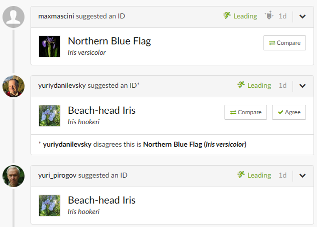
Choosing (the right) Features is Important!
A feature is “an individual measurable property or characteristic of a phenomenon”.1 In the context of machine learning, selecting the right features is critical to the success of your model.
Using informative, discriminative, and independent features is essential for building effective classification algorithms. The features you choose can significantly influence the model’s ability to learn accurately from the data and make reliable predictions. In the case of our iris example, perhaps the app’s algorithm relied on certain features that led it to misclassify the species.
The Iris Dataset
The Iris dataset is a classic example used in machine learning, containing three types of iris flowers: Setosa, Versicolor, and Virginica.
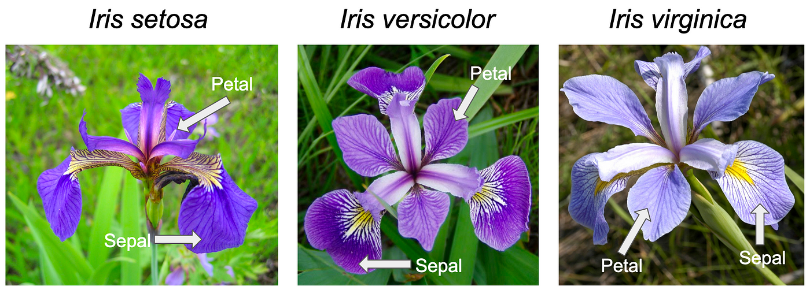
The species of each iris can be determined by a combination of features, specifically the petal and sepal width and length.
Taking Another Look
Given the features we’ve discussed, do you think the Seek AI might have relied on different features or interpreted them differently, leading to the incorrect classification?
Let’s Explore the Dataset!
To better understand how machine learning models work, let’s take a closer look at the Iris dataset.
- 4 Features (Independent Variables)
- 150 Total Observations
- 50 of each Iris Type
- Excellent sample to demonstrate machine learning!
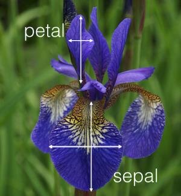
Visualizing the Raw Data
To start, let’s visualize the raw data from the Iris dataset to better understand the relationships between different features.
Show the code
plt.style.use("dark_background")
# Making a correlation plot of all variables except 'Id'
corr_plot = sns.pairplot(data.iloc[:, 0:5],
kind="scatter",
hue="species",
markers=["o", "s", "D"],
palette="Set2",
plot_kws={'alpha': 0.7})
sns.move_legend(corr_plot, "lower center",
bbox_to_anchor=(0.5, 1), ncol=3, title=None, frameon=False
)
# Resize to fit
corr_plot.fig.set_size_inches(10, 5.5)
# Show the plot
corr_plot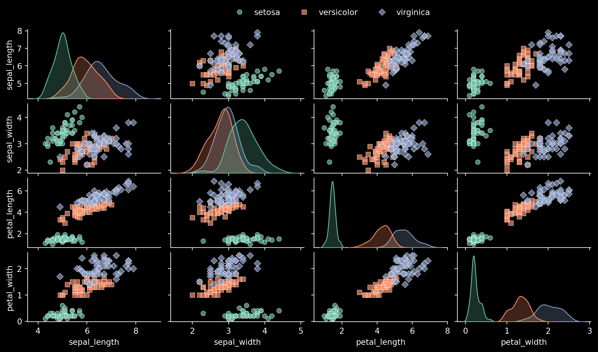
This plot offers a clear visualization of how different features are interrelated across the three iris species. Notice how, in various panels, each species tends to form its own distinct grouping, highlighting the separability of the data based on the selected features.
Reducing Dimentionality
Dimensionality reduction techniques, like Principal Component Analysis (PCA), help us simplify complex datasets. By translating our 4-dimensional data into two dimensions, we can better visualize the differences between species.
Here, we can see how each species is relatively clustered when visualized with PCA.
Show the code
plt.figure(figsize=(10, 5.5))
df = px.data.iris()
X = df[['sepal_length', 'sepal_width', 'petal_length', 'petal_width']]
pca = PCA(n_components=2)
components = pca.fit_transform(X)
# Create a DataFrame with the PCA results
pca_df = pd.DataFrame(data=components, columns=['PCA1', 'PCA2'])
pca_df['species'] = df['species']
# Plot the PCA results
pca2d = sns.scatterplot(data=pca_df, x='PCA1', y='PCA2', hue='species', palette="Set2")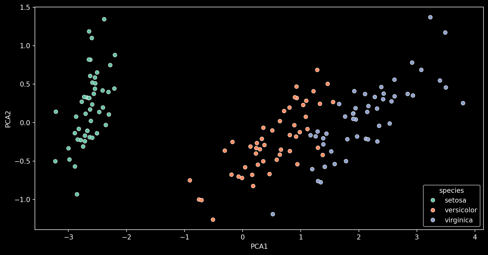
Seperating Our Dependent and Independent Variables
Next, let’s separate our dataset into independent (X/Input) and dependent (y/Output) variables. This is a crucial step before training our model, as it ensures that the model learns the relationships between the input features and the output labels without being biased by the answers themselves. We don’t want our model to use the labels (answers) during training, as that would defeat the purpose of learning from the data.
Here, we take our original dataset of 150 observations, each with 4 features (petal & sepal length and width), and split them into independent variables (X), which the model will use to make predictions, and dependent variables (y), which represent the correct species classification for each observation (labels). This separation is essential for supervised learning because it allows the model to understand how different combinations of features correspond to specific outcomes.
The feature (X/independent) variables are of shape: (150, 4)
The target (y/dependent) variables are of shape: (150,)| Independent Vars | |
|---|---|
| 0 | sepal_length |
| 1 | sepal_width |
| 2 | petal_length |
| 3 | petal_width |
| species | |
|---|---|
| 111 | virginica |
| 74 | versicolor |
| 25 | setosa |
| 43 | setosa |
Train-Test Split
The classifier’s performance can become inflated if it trains on the same data it is tested with, a problem known as data leakage. Data leakage occurs when the model has access to information it shouldn’t have during training, leading to overly optimistic performance metrics.
To evaluate model performance accurately and avoid this issue, it’s essential to split the data into training and testing sets. The training set is used to teach the model, while the testing set is used to evaluate how well the model generalizes to unseen data.
This step is crucial because it helps us understand how the model will perform in real-world scenarios, where it will encounter data it has never seen before.
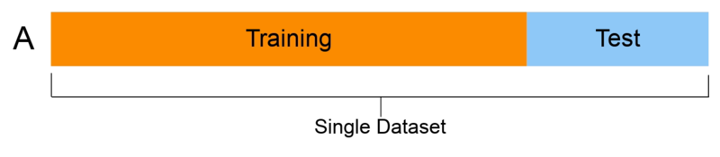
Making the Train-Test Split
Let’s proceed with the train-test split, keeping 30% of the data for testing and ensuring the class distribution remains consistent through stratification. - Test size: 30% of the data is reserved for testing the model. - Stratify: Preserves the class ratios (33% of each iris species).
This outputs:
X_train: 70% of our independent data (petal & sepal length and width)y_train: 70% of our dependent data (species)X_test: 30% of our independent data (petal & sepal length and width)y_test: 30% of our dependent data (species)
X_train shape is: (105, 4)
y_train shape is: (105,)
X_test shape is: (45, 4)
y_test shape is: (45,)Why is Stratification Important?
Stratification is crucial because it ensures that each class is proportionally represented in both the training and testing sets.
Without stratification, the model might over-focus on more prevalent classes, leading to biased performance and poor accuracy on underrepresented classes.
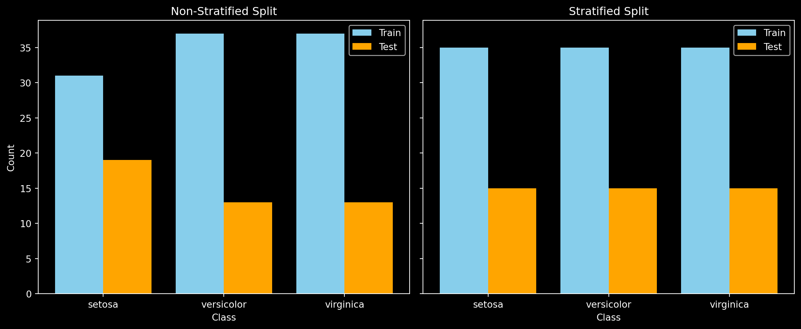
Here, we can visualize the difference between an unstratified and a stratified train-test split. If we were to train our model on the unstratified data, it would have less data on Iris Setosa to train with and more to test with, leading to an imbalance. This imbalance could cause the model to perform well on certain classes while underperforming on others, resulting in biased predictions. By using stratification, we ensure that each class is adequately represented in both the training and testing sets, leading to a more balanced and fair evaluation of the model’s performance.
Training the Models!
Now that our data is ready, let’s train several supervised machine learning models and evaluate their performance. We’ll be using the scikit-learn Python library, which provides a wide range of tools for building and evaluating models. For a complete list of all the supervised models that scikit-learn supports, click here.
# Instantiate the classifiers
classifiers = [ # Makes a list of classifier objects:
SVC(kernel='linear', random_state=42), # Linear Support-Vector Machine (SVM)
SVC(kernel='rbf', random_state=42), # RBF Support-Vector Machine (SVM)
DecisionTreeClassifier(random_state=42), # Decision Tree
RandomForestClassifier(random_state=42), # Random Forest
KNeighborsClassifier(), # K-nearest Neighbours
LogisticRegression(random_state=42, max_iter=1000) # Logistic Regression
]
# Train the classifiers
for clf in classifiers: # Loop iterates through the list of classifiers
clf.fit(X_train, y_train) # Trains with the X (input) and Y (output) training data
y_pred = clf.predict(X_test) # Fits the X test data; trained model returns predictions
accuracy = accuracy_score(y_test, y_pred) # Calculates accuracy of the model
print(f"Accuracy of {clf.__class__.__name__}: {accuracy:.2f}") # Prints the accuracy scoreAccuracy of SVC: 1.00
Accuracy of SVC: 0.96
Accuracy of DecisionTreeClassifier: 0.93
Accuracy of RandomForestClassifier: 0.89
Accuracy of KNeighborsClassifier: 0.98
Accuracy of LogisticRegression: 0.93Here, we get accuracy scores ranging from around 0.90 to 1.00 for each classifier. But what does this mean? That’s a great question! We’ll dive into the significance of these accuracy scores and how to properly evaluate the performance of machine learning models in the next section.
Visualizing Machine Learning!
Let’s take a closer look at how well the trained models differentiate between the different iris species by visualizing their decision boundaries.
To make this possible, I applied Principal Component Analysis (PCA) to reduce our 4-dimensional data into 2 dimensions before training the models. This dimensionality reduction allows us to clearly visualize the decision boundaries each model establishes.
In the visualization, you can observe how each model draws boundaries that separate the iris species into distinct regions. For instance, if a new data point —say, an Iris Setosa— falls within the blue region, the model predicts that this iris is indeed an Iris Setosa. This approach helps us understand how the models make predictions based on the learned patterns in the data. However, if an Iris Virginica were incorrectly placed in another region, it would result in a misclassification. Such errors could prompt the machine learning model to adjust and refine its decision boundaries to improve accuracy.
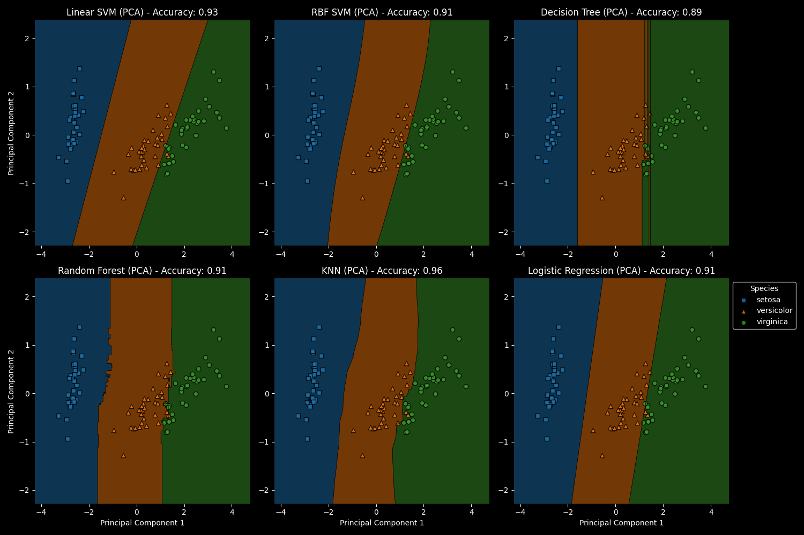
Evaluating Model Performance
Accuracy Score
Evaluation metrics are crucial for understanding how well your model is performing. The most commonly used metric is Accuracy, which is defined as the number of correct predictions over the total number of predictions: \[ \text{Accuracy} = \frac{\text{Number of Correct Predictions}}{\text{Total Number of Predictions}} \]
Do you recall the accuracy scores of the models we trained earlier? Since we tested each trained model on 45 unseen cases (the testing set), we can evaluate how well each model performed!
Click Here if You Forgot!
Accuracy of SVC: 1.00
Accuracy of SVC: 0.96
Accuracy of DecisionTreeClassifier: 0.93
Accuracy of RandomForestClassifier: 0.89
Accuracy of KNeighborsClassifier: 0.98
Accuracy of LogisticRegression: 0.93For example, the Support Vector Classifier (SVC) had an accuracy of 1.00, meaning it correctly classified all 45 test inputs. On the other hand, the Random Forest Classifier had an accuracy score of 0.89. If we do some math, we can calculate the exact number of correctly classified cases for the Random Forest model: \[ \text{Number of Correct Predictions} = \text{Accuracy} \times \text{Total Number of Test Cases} \]
\[ \text{Number of Correct Predictions} = 0.89 \times 45 \approx 40 \]
This means that out of 45 test cases, the Random Forest Classifier correctly classified 40 of them, with the remaining 5 cases being misclassified—which is still quite good!
Confusion Matrices
A confusion matrix is an excellent tool for visualizing your model’s performance by providing a detailed breakdown of its predictions. Each row of the matrix represents the actual class, while each column represents the predicted class. The diagonal elements show correct predictions, while off-diagonal elements indicate misclassifications. Unlike accuracy alone, a confusion matrix shows how well your model distinguishes between different classes by displaying the counts of true positives, true negatives, false positives, and false negatives.
Click Here for a Breakdown of Error Types
- True Positives (TP): These are cases where the model correctly predicted the positive class. For example, if the model predicts “Iris Setosa” and it’s actually “Iris Setosa,” that’s a true positive.
- True Negatives (TN): These are cases where the model correctly predicted the negative class. For example, if the model predicts “Not Iris Setosa” and it’s indeed not “Iris Setosa,” that’s a true negative.
- False Positives (FP): Also known as Type I errors, these occur when the model incorrectly predicts the positive class. For instance, if the model predicts “Iris Setosa” when it’s actually a different species, that’s a false positive.
- False Negatives (FN): Also known as Type II errors, these occur when the model incorrectly predicts the negative class. For example, if the model fails to predict “Iris Setosa” and instead predicts another species when it is actually “Iris Setosa,” that’s a false negative.
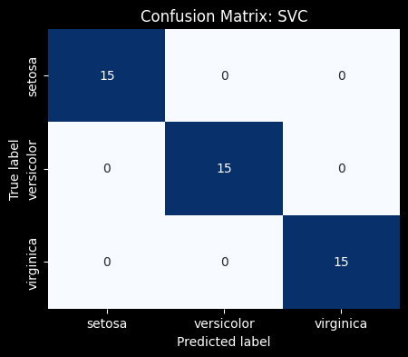
45 Correct Predictions / 45 Total Prediction = 1.00
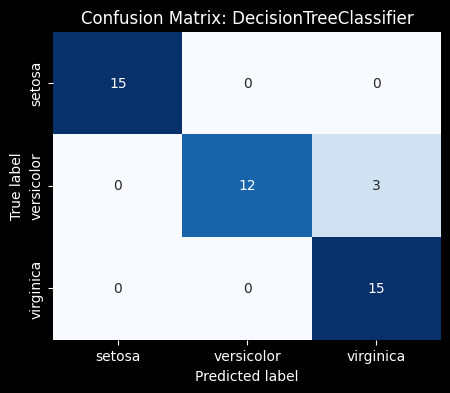
43 Correct Predictions / 45 Total Prediction = 0.95
For example, in the case of the Iris dataset, the confusion matrix reveals not just the overall accuracy but also whether your model is prone to specific errors, such as predicting one species of iris when it’s actually another (false positives) or failing to correctly identify a species when it’s present (false negatives). This detailed view helps you understand how well your model distinguishes between the three iris species—Setosa, Versicolor, and Virginica.
This level of detail is particularly valuable when dealing with imbalanced datasets, where one class may be much more prevalent than the other. In such cases, a high accuracy might be misleading, while the confusion matrix reveals the true performance of your model across all classes.
By analyzing the confusion matrix, you can gain deeper insights into the strengths and weaknesses of your model, guiding you toward improvements, such as tweaking the model, adjusting thresholds, or selecting different metrics like Precision, Recall, or F1 Score for a more comprehensive evaluation.
Overall, accuracy is a valuable metric for evaluating how well your model predicts or classifies data. It can also provide guidance on which model may work best for your specific dataset. However, while accuracy is useful, it’s not always the best metric, especially in cases where the classes are imbalanced.
When is Accuracy Sub-optimal?
In cases of imbalanced classes, accuracy can be misleading. Let’s explore why this is the case.
Imagine we have a trained model that we want to test with new data. Suppose this new dataset has 100 observations: 80 are of Iris Setosa, and 20 are of Iris Versicolor.
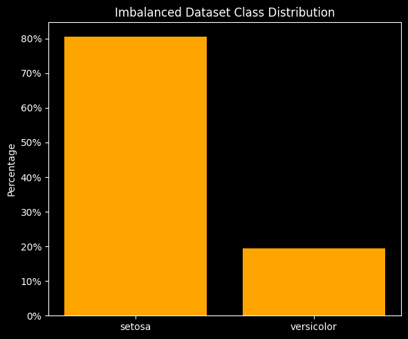
If the classifier predicted ‘Setosa’ for all 100 observations, what would the accuracy be?
\[ \scriptsize{\text{Accuracy} = \frac{\text{Number of Correct Predictions}}{\text{Total Number of Predictions}}} \]
80 Correct Predictions / 100 Total Predictions = 0.80
So, even though the accuracy score is a respectable 80%, the model isn’t actually distinguishing between the two classes at all!
In situations where there is an imbalance of classes, accuracy does not provide a fully informative picture of the model’s performance, as illustrated in the example above. Metrics like F1 Score, Precision, and Recall (Sensitivity) can offer a more comprehensive assessment by considering the balance between different types of errors.
Summary
- Labeled Data: Supervised machine learning relies on labeled data, which is particularly effective for classification tasks, allowing models to learn and make accurate predictions.
- Feature Selection: Choosing the right features is crucial for model success. Informative and discriminative features help the model make reliable predictions.
- Train-Test Split: Splitting your data into training and testing sets is essential to prevent data leakage and ensure that your model’s performance is evaluated on unseen data.
- Stratification: Stratifying your data during the train-test split ensures that each class is proportionally represented, leading to more balanced and accurate model evaluations.
- Accuracy as a Metric: While accuracy is a valuable metric, it may not always be sufficient, particularly in cases of imbalanced classes. Complementary metrics like F1 Score, Precision, and Recall provide a more comprehensive assessment of model performance.